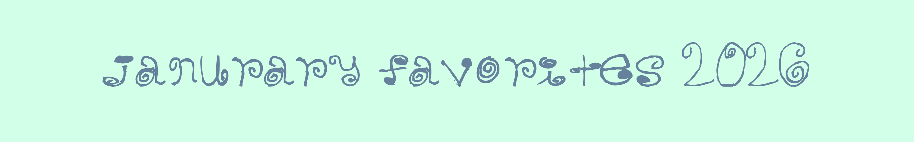
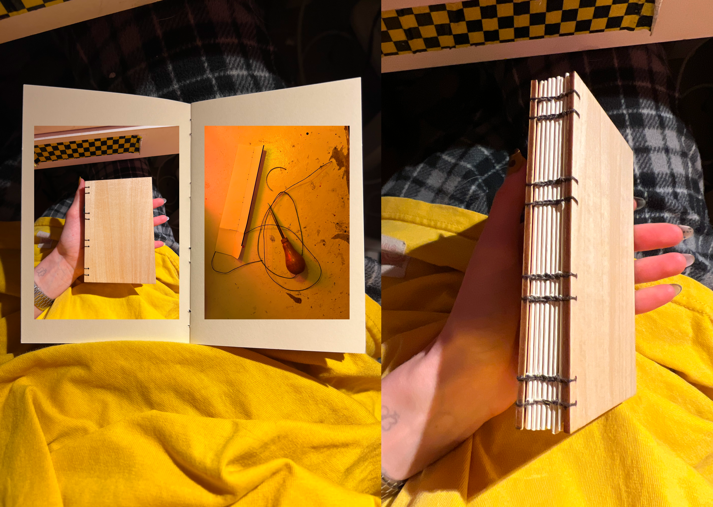
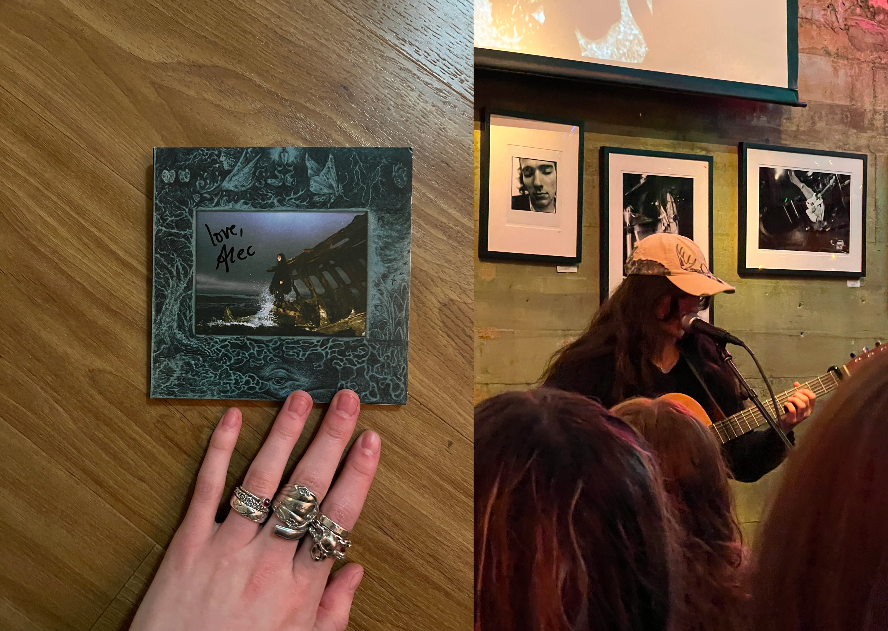
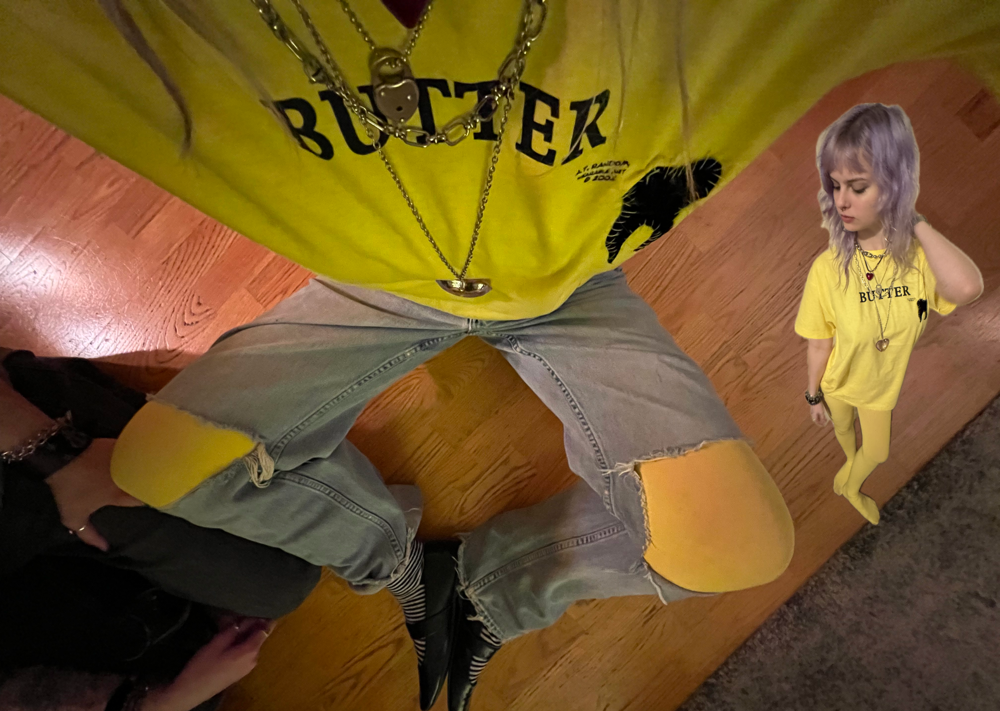
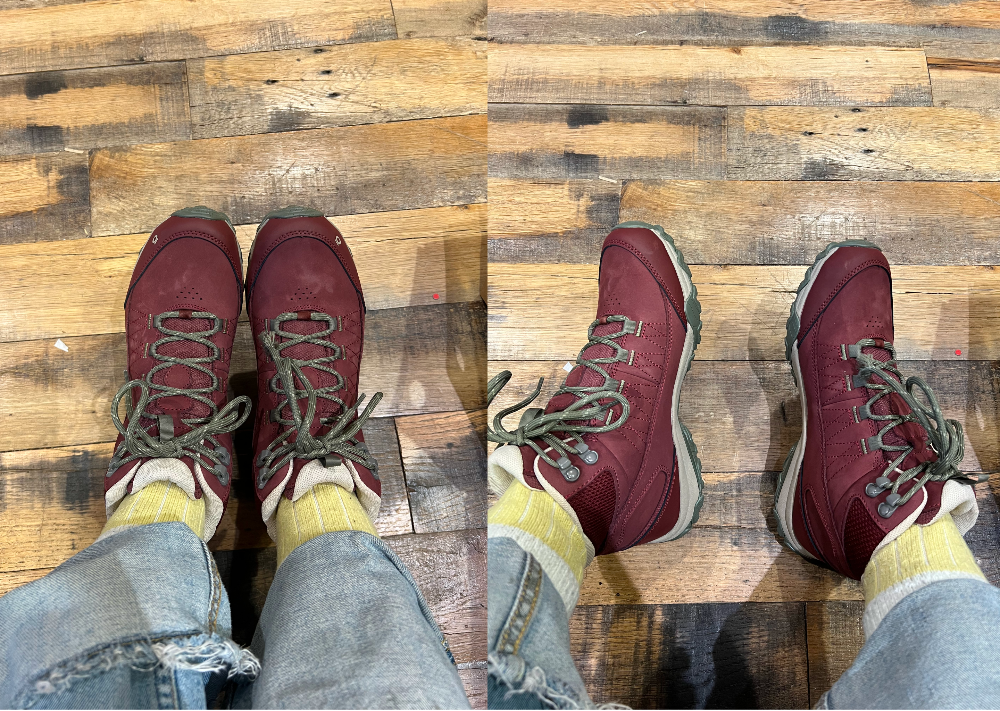
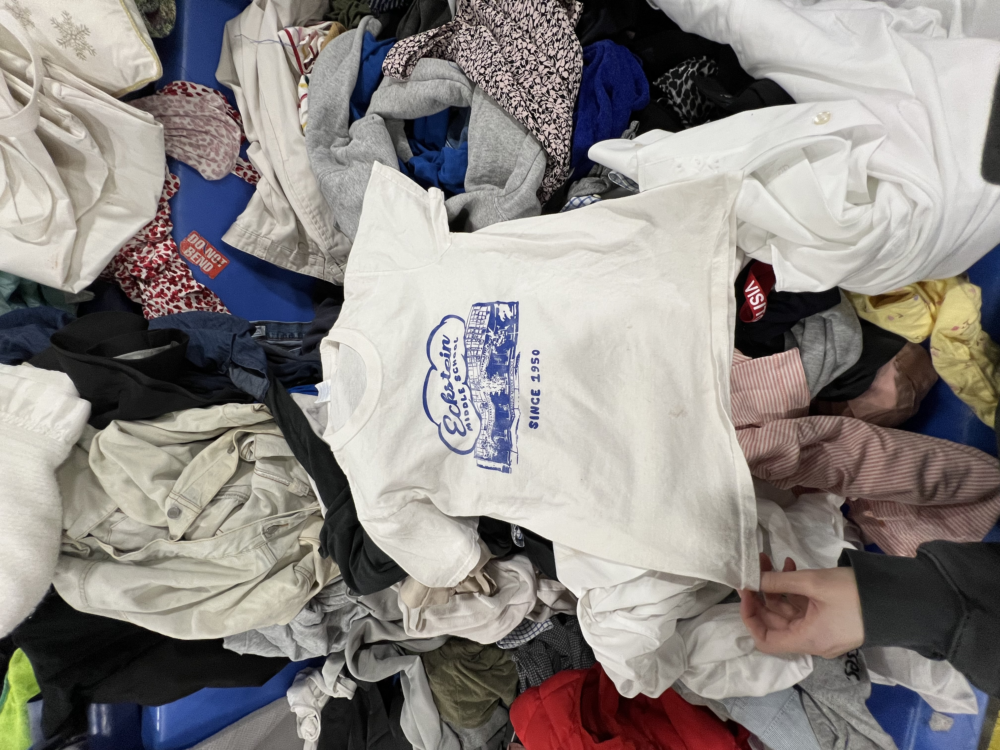
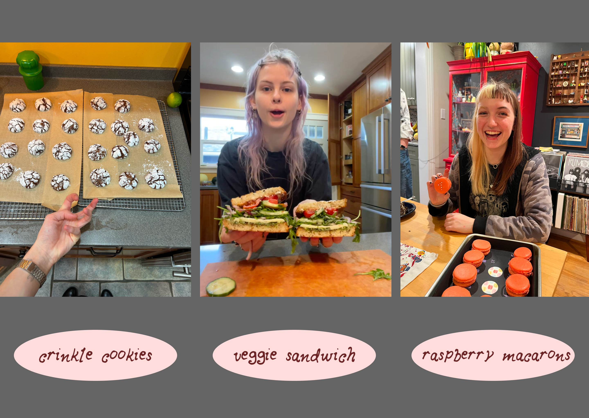
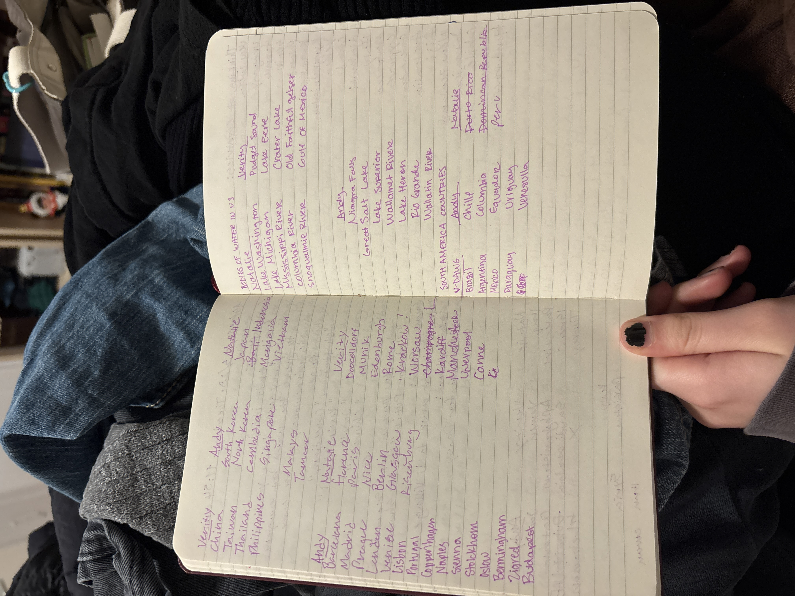

I got these supplies from school when i was making my bfa project but just never bound it. this month i did and it's become my notebook for everything. very nice to have in my pocket.

i be eating these like nuts dude. i love seeds. flavor explosion. love love love love love. 10/10

My skin get dry in the winter months! this helps keep me glowwweeeeyyyy. This bottle is like three years old but she's still kickin! #whatever

This album has been on #repeatttttt it's so special to me. I love searows. Every single song is so good. Me and my partner went to see him perform at a local record shop and it was magical. He sounds the exact same live as he does on recording. ugh love. love love love searows forever. Got my CD signed.

My good pal Riley got me this butter shirt for my birthday. And it just so happened to be that I was already wearing my yellow tights on my bday. I LOVE LELLO AND I LOVE BUTTER! Thank you Riley.

I have never known comfort until now. I can walk for one million miles if I had to. #comfortable
I think because it was a new year ive been getting a lot of journalling content on my page. ive been really into louise carmen and paper republic leather bound journals but they are Far Too Expensive so maybe this year is when i get into #leatherwork who knows. but yes i really like the idea of having all your things in one place, bound up by that little cute stringggg with the charmmm ugh very cute and darling. #JournalForever

I went to the bins alone, something I usually do with a friend, and it was very nice and calming. I will be doing it again.

Made some cookies for my bday, made an epic veggie sammy, and made raspberry macarons for Verity's bday #yay

This month was huge for games.
This was a game that Andy and Verity and I played where we would try to name as many places from certain locations.
Andy and Verity are both good at geography. (thank you verity for the image)
This month I also played Chess, Ping Pong, and Badminton with Andy.